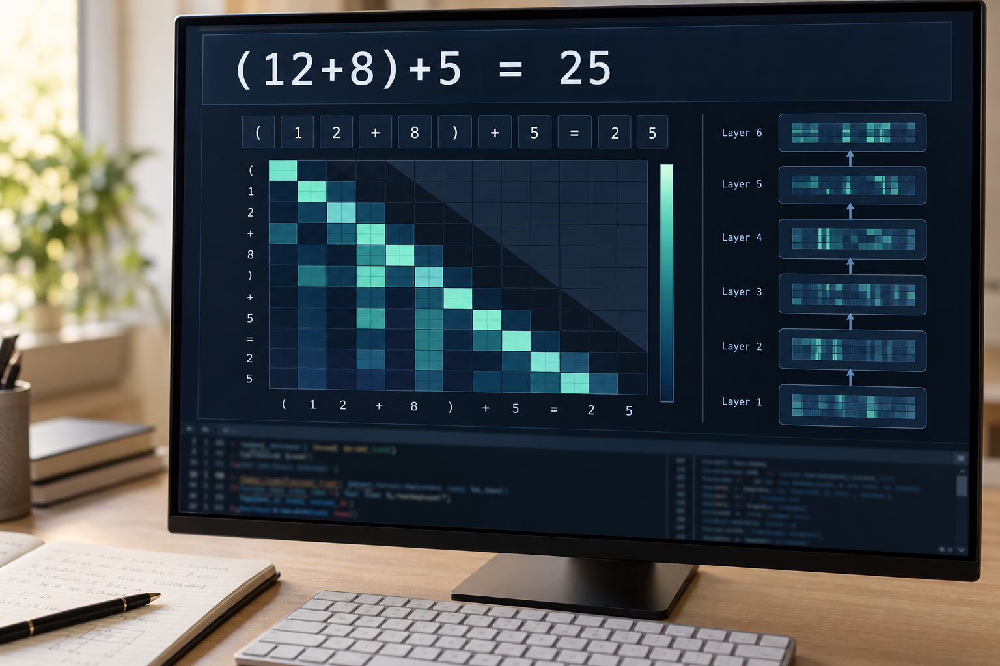

- Cleaned and validated 1,000+ machine-generated records to improve downstream data quality.
- Helped streamline model-assisted data workflows, reducing processing time by 25%.
- Translated Tableau analysis into clear recommendations on market opportunities.
Boston-based · Open to opportunities
Zhi-Jun (Jason) Hong
I am a Master’s student in Data Science at Boston University, specializing in Machine Learning, Statistical Analysis, and AI. With a background in Statistics, Fintech, and Data Science, I focus on developing high-impact models and translating complex data into actionable recommendations, bridging the gap between real-world problems and data-driven solutions.

Machine Learning✦Data Engineering✦Analytics✦Visualization✦
✦✦✦✦
About Me
I'm a master's student in Data Science at Boston University, with a background in Statistics and FinTech from National Cheng Kung University. My interests center on data analysis, AI and machine learning, probability and statistics, and financial portfolio optimization. Coursework in Deep Learning for Data Science, Multivariate Analysis, Regression Analysis, Analysis of Time Series, and Introduction to Mathematical Finance has shaped how I approach these problems.
I enjoy working through a problem from preparing messy data and testing models to explaining what the results mean. My projects range from Kafka and Spark data pipelines and healthcare risk prediction to LSTM forecasting and Black–Litterman portfolio optimization. Throughout that process, I pay attention to data quality, model performance, and the business context behind each decision, aiming to turn complex findings into clear, practical recommendations.
My Skills
Data Analysis & Statistics
- Probability & Statistics
- Exploratory Data Analysis
- Regression
- Time Series
AI & Machine Learning
- Machine Learning
- Deep Learning
- PyTorch
- scikit-learn
Quantitative Finance
- Portfolio Optimization
- Black–Litterman
- LSTM Forecasting
Programming & Data Tools
- Python
- R
- SQL
- Apache Spark
- Kafka
- MySQL
- Tableau
- Docker
Experience
- Researched financial inclusion policies, government incentives, and existing green finance products to identify financing gaps for SMEs and agricultural businesses.
- Analyzed historical green bond issuance and lending data, alongside 25 SME low-carbon transition cases from 2018–2022, to inform product design.
- Designed a proposed NT$1 billion green financing program, specifying a 5-year bond tenor, a 1.75% coupon, and an initial 2.375% loan rate based on 2023 benchmarks.
- Developed a three-stage loan disbursement framework, performance-based interest subsidies, and broker incentives to support the proposed financing program.
- Modeled annual loan interest income of NT$23.75 million and bond interest expense of NT$17.5 million; created financial charts, a SWOT analysis, and product documentation to communicate the proposal’s feasibility.
- Organized research data and documentation to support accurate, complete submissions.
- Built R visualizations and structured analytical outputs in LaTeX for clearer communication.
- Designed an interactive Gather Town environment to introduce AIESEC’s mission and core values and facilitate participant interaction.
- Collaborated with team members on event planning, contributing to discussions on activity concepts and arrangements.
Projects
Big Data Engineering
Epidemic Analytics Engine
Spark batch pipelines process four typed Kafka streams into structured MySQL analytics, with anomaly detection and outbreak prediction layered on top.
- Apache Kafka
- Apache Spark
- MySQL
Legal Data Analytics
Medical Case Analytics
A regex and fuzzy-matching pipeline transformed unstructured Massachusetts court filings into medical case categories and surfaced concentrated creditor behavior.
- Regex
- Fuzzy Matching
- EDA
Healthcare Machine Learning
Stroke Risk Prediction
Explore 14,976 health records through symptom-based prediction and patient segmentation, with five classifiers and four interpreted risk groups.
- scikit-learn
- MLP Classification
- K-Means
Quantitative Finance
Portfolio Optimization
Compare forecasting models and six-stock allocations against 10 Taiwan ETF benchmarks, with transparent return, volatility, and Sharpe calculations.
- LSTM
- Mean–Variance
- Black–Litterman
Deep Learning · Sequence Modeling

Transformer Arithmetic Reasoning
Train a compact causal Transformer from scratch to generate complete, step-by-step reductions of parenthesized addition expressions.
- PyTorch
- Causal Attention
- Curriculum Learning
Deep Learning · Computer Vision
Butterfly Species Classification
Build a custom PyTorch CNN for 10 butterfly categories, reaching 79.22% validation accuracy with a complete image-to-probability pipeline.
- PyTorch
- CNN
- Data Augmentation
Side Project · Scheduling
Mahjong Tournament Scheduler
A desktop and command-line tool for balanced four-player schedules, with seeded generation, validation, pairing reports, and TXT / CSV / JSON export.
- Python
- Heuristic Search
- Tkinter
Education
Boston University
Master Science in Data Science
Sep 2025 – Jan 2027
National Cheng Kung University
Bachelor of Business Administration in Statistics & Interdisciplinary Fintech Program
Sep 2020 – Jun 2024
Contact
Let's Connect！
Find me online or send a note — I’m always open to thoughtful conversations and new opportunities.